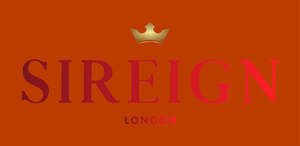

Trade Mark Journal No.2025/024 13 June 2025
UK00004210605 28 May 2025 (25)

- Class 25
- Clothing; Jackets [clothing]; Knitwear [clothing]; Ready-to-wear clothing; Woolen clothing; Furs [clothing]; Garments for protecting clothing; Layettes [clothing]; Clothing layettes; Linen clothing; Headbands [clothing]; Headbands for clothing; Gloves [clothing]; Gloves as clothing; Clothes; Aprons [clothing]; Maternity clothing; Kerchiefs [clothing]; Jerseys [clothing]; Denims [clothing]; Shorts [clothing]; Cashmere clothing; Capes (clothing); Oilskins [clothing]; Gabardines [clothing]; Leather clothing; Clothing of leather; Leather (Clothing of -); Silk clothing; Collars [clothing]; Parts of clothing, footwear and headgear; Veils [clothing]; Knitted clothing; Hoods [clothing]; Windproof clothing; Corsets [clothing, foundation garments]; Wristbands [clothing]; Embroidered clothing; Belts [clothing]; Belts for clothing; Rainproof clothing; Waterproof clothing; Bandeaux [clothing]; Casual clothing; Visors [clothing]; Jackets being sports clothing; Jackets (Stuff -) [clothing]; Stuff jackets [clothing]; Playsuits [clothing]; Bottoms [clothing]; Clothing for leisure wear; Latex clothing; Ready-made clothing; Trunks being clothing; Woven clothing; Infant clothing; Drawers [clothing]; Drawers as clothing; Leisure clothing; Clothing for sports; Sports clothing; Ties [clothing]; Clothing for children; Athletic clothing; Muffs [clothing]; Bodies [clothing]; Clothing for babies; Tops [clothing]; Clothing for infants; Weatherproof clothing; Clothing for cycling; Pockets for clothing; Water-resistant clothing; Handwarmers [clothing]; Fabric belts [clothing]; Clothing for skiing; Triathlon clothing; Beach clothing; Chaps (clothing); Thermal clothing; Cowls [clothing]; Men's clothing; Fishing clothing; Mitts [clothing]; Dance clothing; Braces for clothing; Plush clothing; Cotton coats; Quilted jackets [clothing]; Linen (Body -) [garments]; Body linen [garments]; Hats (Paper -) [clothing]; Paper hats [clothing]; Paper clothing; Nappy pants [clothing]; Clothing made of fur; Paper hats for use as clothing items; Leather garments; Golf clothing, other than gloves; Leather belts [clothing]; Clothing made of leather; Silk scarves; Silk ties; Clothing of imitations of leather; Leather (Clothing of imitations of -); Boas [clothing]; Motorcyclists' clothing of leather; Denim jeans; Denim jackets; Denim pants; Coats of denim; Denim coats; Jeans; Babies' pants [clothing]; Gussets for underwear [parts of clothing]; Corsets [foundation clothing]; Corsets being foundation clothing; Jogging bottoms [clothing]; Leggings [trousers]; Dress shirts; Dress pants; Slips [clothing]; Trousers shorts; Corduroy shirts; Turtleneck shirts; Dress shoes; Blue jeans; Outer clothing; Sweat-absorbent underclothing [underwear]; Leather dresses; Bra straps [parts of clothing]; Gussets for stockings [parts of clothing]; Gussets for tights [parts of clothing]; Clothing made of imitation leather; Dresses; Sleeveless jackets; Pinafore dresses; Bodices [lingerie]; Leather jackets; Leather shoes; Articles of clothing made of leather; Leather headwear; Trousers of leather; Leather pants; Leather waistcoats; Leather coats; Leather suits; Suits of leather; Imitation leather dresses; Leather slippers; Suede jackets; Wraps [clothing]; Gussets for leotards [parts of clothing]; Braces [suspenders] for clothing / Suspenders [braces] for clothing; Shoulder straps for clothing; Party hats [clothing]; Fur jackets; Fingerless gloves as clothing; Sleeveless jerseys; Gloves for apparel; Jerseys; Clothing for cyclists; Clothing for wear in wrestling games; Sports clothing [other than golf gloves]; Sports garments; Clothes for sport; Foulards [clothing articles]; Clothes for sports; Mufflers [clothing]; Plastic aprons; Plastic slippers; Gussets for bathing suits [parts of clothing]; Sweat-absorbent underwear; Undergarments; Clothing for gymnastics; Underwear (Anti-sweat -); Anti-sweat underwear; Underwear; Lace boots; Canvas shoes; Sarees; Saris; Pleated skirts; Pareos; Sleeveless pullovers; Blouses; Kaftans; Chemise tops; Uppers of woven rattan for Japanese style sandals; Blouson jackets; Pleated skirts for formal kimonos (hakama); Bridesmaid dresses; Men's dress socks; Stoles; Cheongsams (Chinese gowns); Slippers made of leather; Japanese style sandals of leather; Slip-on shoes; Shoe uppers; Belts made from imitation leather; Belts made of leather; Uppers for Japanese style sandals; Corduroy trousers; Woven shirts; Corduroy pants; Button-front aloha shirts; Fleece shorts; Gabardines; Shirt yokes; Yokes (Shirt -); Fleece pullovers; Short-sleeved shirts; Fabric belts; Sash bands for kimono (obi); Underskirts; Short overcoat for kimono (haori); Shirts; Long-sleeved shirts; Short-sleeve shirts; Open-necked shirts; Collared shirts; Short-sleeved T-shirts; Polo shirts; Shirt fronts; Knit shirts; Camouflage shirts; Mock turtleneck shirts; Sweat shirts; Casual shirts; Shirts for suits; Shirts and slips; Pique shirts; Rugby shirts; Football shirts; Maternity shirts; Hooded sweat shirts; Aloha shirts; Soccer shirts; Golf shirts; T-shirts; Night shirts; Bib shorts; Ramie shirts; Sport shirts; Sleep shirts; Tennis shirts; Fishing shirts; Yoga shirts; Under shirts; Button down shirts; Hunting shirts; Tee-shirts; Pants; Boy shorts [underwear]; Sports shirts with short sleeves; Sports shirts; Trousers; Moisture-wicking sports shirts; V-neck sweaters; Printed t-shirts; Camouflage pants; Babies' pants [underwear]; Chino pants; Shorts; Sweat pants; Sweatpants; Turtleneck sweaters; Bib overalls for hunting; Sleeved jackets; American football shirts; Polo sweaters; Bib tights; Maternity pants; Golf trousers; Casual trousers; Trouser socks; Capri pants; Sweat shorts; Maternity shorts; Trousers for sweating; Pirate pants; Slacks; Warm-up pants; Undershirts; Snowboard trousers; Padded shirts for athletic use; Khakis; Skirt suits; Baby pants; Turtleneck pullovers; Vest tops; Polo knit tops; Rugby shorts; Moisture-wicking sports pants; Romper suits; Overalls; Tracksuit tops; Tracksuit bottoms; Jogging pants; Golf shorts; Cycling pants; Mock turtleneck sweaters; Turtleneck tops; Nurse pants; Sweatshirts; Dress suits; Hoodies; Bibs, sleeved, not of paper; Hooded sweatshirts; Beanie hats; Tank-tops; American football pants; Maternity leggings; Men's underwear; American football shorts; Knitted underwear; Gym shorts; Swim shorts; Sweatshorts; Bermuda shorts; Waterproof pants; Yoga pants; Vests; Fleece vests; Quilted vests; Camouflage vests; Wind-resistant vests; Waistcoats [vests]; Hunting vests; Fishing vests; Vests (Fishing -); Wind vests; Down vests; Running vests; Scrimmage vests; Long sleeved vests; Men's and women's jackets, coats, trousers, vests; Sports vests; Athletics vests; Knit jackets; Fleece jackets; Jacket liners; Windproof jackets; Bomber jackets; Camouflage jackets; Rainproof jackets; Reversible jackets; Shell jackets; Weatherproof pants; Wind-resistant jackets; Padded jackets; Waterproof jackets; Jackets; Polar fleece jackets; Weatherproof jackets; Waterproof trousers; Riding jackets; Fur coats and jackets; Motorcycle jackets; Sheepskin jackets; Hunting jackets; Breeches for wear; Camouflage gloves; Hunting pants; Collar liners for protecting clothing collars; Korean outer jackets worn over basic garment [Magoja]; Padded pants for athletic use; Ski jackets; Hooded pullovers; Snowboard jackets; Fishing jackets; Jumper suits; Knitted gloves; Riding trousers; Gilets; Tuxedo belts; Collar guards for protecting clothing collars; Ski pants; Waterproof capes; Stretch pants; Lounge pants; Cargo pants; Trouser straps; Track pants; Sleep pants; Wind pants; Ski trousers; Leggings [leg warmers]; Pants (Am.); Snow pants; Baselayer bottoms; Pajama bottoms; Culotte skirts; Horse-riding pants; Tap pants; Rain trousers; Sports pants; Short trousers; Sweat bottoms; Pantaloons; Jogging bottoms; Sliding shorts; Yoga bottoms; Sweat jackets; Culottes; Briefs [underwear]; Infants' trousers; Baselayer tops; Padded shorts for athletic use; Sweat suits; Jogging suits; Trews; Knickers; Dungarees; Trousers for children; Underpants; Woollen tights; Jodhpurs; Pocket squares [clothing]; Suits made of leather; Boot cuffs; Coats (Top -); Top coats; Top hats; Tops; Tank tops; Tube tops; Crop tops; Halter tops; Hooded tops; Fleece tops; Rugby tops; Knit tops; Maternity tops; Baby tops; Knitted tops; Cycling tops; Warm-up tops; Jogging tops; Yoga tops; Skirts; Tennis skirts; Golf skirts; Jumper dresses; Skorts; Dress shields; Shields (Dress -); Collars for dresses; Thong sandals; Strapless bras; Frock coats; Bra straps; Strapless brassieres; Maternity dresses; Panties; Dresses for evening wear; Miniskirts; Tights; Petticoats; Cocktail dresses; Fancy dress costumes; Tennis dresses; Short petticoats; One-piece playsuits; Heel pieces for stockings; Stockings (Heel pieces for -); Knee-high stockings; Boxer shorts; Cycling shorts; Boxing shorts; Tennis shorts; Walking shorts; Board shorts; Boardshorts; Trunks [underwear]; Sundresses; Swim briefs; Athletic tights; Jockstraps [underwear]; Boxer briefs; Sandals and beach shoes; Swimsuits; Shoes for leisurewear; Wedding dresses; Costumes for use in children's dress up play; Dressing gowns; Evening dresses; Shift dresses; Bridesmaids wear; Nurse dresses; Wedding gowns; Bridal gowns; Women's ceremonial dresses; Gowns; Shoes for casual wear; Formal wear; Sashes for wear; Ladies' dresses; Christening gowns; Bathing costumes; Maternity wear; Formal evening wear; Ladies wear; Bridal garters; Bathing costumes for women; Casual wear; Evening gowns; Evening wear; Wedding garters; Skating outfits; Dresses made from skins; Clothing for wear in judo practices; Costumes; Fitted swimming costumes with bra cups; Masquerade costumes; Costumes (Masquerade -); Masquerade and halloween costumes; Halloween costumes; Face masks [fashion wear] ; Dinner suits; Jogging outfits; Ballet suits; Night gowns; Headgear for wear; Ski wear; Exercise wear; Sports wear; Rain wear; Head wear; Leisure wear; Surf wear; Tennis wear; Swim wear for gentlemen and ladies; Swim wear for children; Infant wear; Children's wear; Paper hats for wear by chefs; Paper hats for wear by nurses; Dinner jackets; Dance shoes; Stocking suspenders; Stockings; Socks and stockings; Body stockings; Heelpieces for stockings; Stockings (Sweat-absorbent -); Sweat-absorbent stockings; Stockings [sweat-absorbent]; Sport stockings; Hosiery; Pantyhose; Sock suspenders; Lingerie; Woollen socks; Knee warmers [clothing]; Toe socks; Footless socks; Maternity lingerie; Teddies [undergarments]; Maternity underwear; Underwear for women; Maillots [hosiery]; Nightwear; Swimwear; Negligees; Corsets [underclothing]; Shapewear; Bras; Teddies [underclothing]; Sleepwear; Underclothes; Bikinis; Maternity sleepwear; Slips [undergarments]; G-strings; Underclothing; Disposable underwear; Camisoles; Nightgowns; Underclothing for women; Brassieres; Women's underwear; Bralettes; Bustiers; Nipple pasties being underclothing; Straps for bras; Beachwear; Nighties; Functional underwear; Ladies' underwear; Nursing bras; Loungewear; Thermal underwear; Babies' undergarments; Girdles [corsets]; Slips [underclothing]; Chemises; Anti-sweat underclothing; Underclothing (Anti-sweat -); Corsets; Shoes; Insoles for shoes and boots; Insoles [for shoes and boots]; High-heeled shoes; Wooden shoes [footwear]; Sneakers [footwear]; Tongues for shoes and boots; Jogging shoes; Tennis shoes; Ballet shoes; Esparto shoes or sandals; Rubber shoes; Walking shoes; Shoes soles for repair; Hiking shoes; Pullstraps for shoes and boots; Esparto shoes or sandles; Basketball shoes; Athletic shoes; Running shoes; Volleyball shoes; Soccer shoes; Waterproof shoes; Sneakers; Shoe soles; Heel pieces for shoes; Snowboard shoes; Wooden shoes; Cycling shoes; Foot volleyball shoes; Shoes for foot volleyball; Platform shoes; Sports shoes; Golf shoes; Footwear soles; Soles for footwear; Athletics shoes; Sport shoes; Yoga shoes; Hockey shoes; Mountaineering shoes; Baby shoes; Football shoes; Roller shoes; Riding shoes; Insoles for footwear; Bowling shoes; Rain shoes; Baseball shoes; Gymnastic shoes; Aqua shoes; Boxing shoes; Training shoes; Handball shoes; Fittings of metal for boots and shoes; Skiing shoes; Beach shoes; Flat shoes; Leisure shoes; Nursing shoes; Shoes for infants; Stiffeners for shoes; Rugby shoes; Heel protectors for shoes; Women's shoes; Work shoes; Footwear; Flip-flops for use as footwear; Tap shoes; Hidden heel shoes; Apres-ski shoes; Deck shoes; Pumps [footwear]; Infants' shoes; Driving shoes; Shoe soles for repair; Sandals; Spiked running shoes; Studs for football shoes; Anglers' shoes; Cleats for attachment to sports shoes; Boots; Trainers [footwear]; Shoe straps; Inner socks for footwear; Protective metal members for shoes and boots; Rubbers [footwear]; Wedge sneakers; Basketball sneakers; Knitted baby shoes; Pedicure sandals; Men's sandals; Bath sandals; Baby sandals; Espadrilles; Toe straps for Japanese style sandals [zori]; Toe straps for zori [Japanese style sandals]; Soles for japanese style sandals; Ladies' sandals; Japanese style clogs and sandals; Japanese style sandals (zori); Flip-flops; Beach footwear; Booties; Anklets [socks]; Pedicure slippers; Ankle boots; Japanese style sandals of felt; Heels; Footwear uppers; Uppers (Footwear -); Japanese footwear of rice straw (waraji); Japanese toe-strap sandals (asaura-zori); Slipper soles; Casual footwear; Moccasins; Slippers; Slipper socks; Thongs; Ankle socks; Desert boots; Hiking boots; Tightening-up strings for kimonos (datejime); Ladies' outerclothing; Petti-pants; Womens' outerclothing; Neckerchieves; Half-boots; Wind-jackets; Sports overuniforms; Headshawls; Camiknickers; Rain jackets; Casual jackets; Warm-up jackets; Wind jackets; Heavy jackets; Bed jackets; Light-reflecting jackets; Smoking jackets; Safari jackets; Down jackets; Donkey jackets; Track jackets; Sports jackets; Stuff jackets; Long jackets; Wind resistant jackets; Fishermen's jackets; Outerwear; Duffle coats; Duffel coats; Motorcycle gloves; Waterproof boots; Overcoats; Trench coats; Suit coats; Greatcoats; Sheepskin coats; Fur coats; Coveralls; Coats; Overshirts; Rain coats; Raincoats; Light-reflecting coats; Trenchcoats; Car coats; Overshoes; Fur cloaks; Winter coats; Pocket kerchiefs; Evening coats; Dust coats; Waistcoats; Topcoats; Heavy coats; Fur hats; Tail coats; Pea coats; House coats; Sport coats; Down coats; Laboratory coats; Wind coats; Morning coats; White coats for hospital use; Coats for men; Coats made of cotton; Coats for women; Fur stoles; Stoles (Fur -); Synthetic fur stoles; Scarves; Cashmere scarves; Scarfs; Neck scarves; Snoods [scarves]; Shoulder scarves; Head scarves; Neck scarves [mufflers]; Mufflers [neck scarves]; Mufflers as neck scarves; Neck tube scarves; Neck scarfs [mufflers]; Shawls; Shawls and headscarves; Shawls and stoles; Sweaters; Mittens; Shawls [from tricot only]; Cardigans; Beanies; Bobble hats; Capelets; Legwarmers; Knitted caps; Fascinator hats; Crew neck sweaters; Shoulder wraps [clothing]; Shoulder wraps for clothing; Wearable blankets in the nature of blankets with sleeves; Headbands; Ear muffs [clothing]; Ear muffs; Boas [necklets]; Sweatjackets; Cravates; Chemisettes; Bushjackets; Sunsuits; Lumberjackets; Rainshoes; Over-trousers; Mankinis; Tailleurs; Headsquares; Pantie-girdles; Sandal-clogs; Babies' outerclothing; Children's outerclothing; Wellington boots; Snowboard boots; Snow boots; Climbing boots [mountaineering boots]; Trekking boots; Mountaineering boots; Winter boots; Rain boots; Ski boots; Boots (Ski -); Walking boots; Riding boots; Hunting boots; Polo boots; Soccer boots; Horse-riding boots; Valenki [felted boots]; Climbing boots; Rugby boots; Army boots; Après-ski boots; Football boots; Work boots; Military boots; Stiffeners for boots; Boots for sport; Boots for motorcycling; Boots for sports; Gym boots; Fishing boots; Motorcyclist boots; Studs for football boots; Football boots (Studs for -); Baby boots; Rubber fishing boots; Waterproof boots for fishing; Ladies' boots; After ski boots; Russian felted boots (Valenki); Non-slipping devices for boots; Infants' boots; Sports [Boots for -]; Boot uppers; Wellingtons; Ski boot bags; Hunting boot bags; Galoshes; Embossed heels of rubber or of plastic materials; Heelpieces for footwear; Welts for footwear; Footwear (Welts for -); Baby bottoms; Underpants for babies; Roll necks [clothing]; Snap crotch shirts for infants and toddlers; Waistbands; Overalls for infants and toddlers; Visors [headwear]; Visors being headwear; Sun visors [headwear]; Visors; Bustle holder bands for obi (obiage); Leg-warmers.
Mihi Pvt Ltd